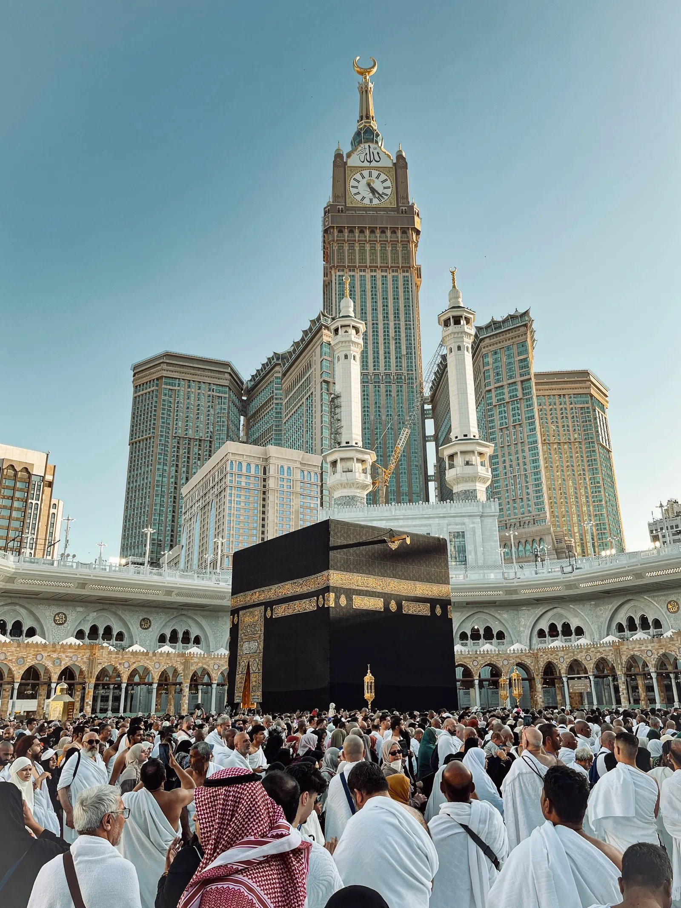

Umrah · Pakistan Cost Guide
Umrah Cost from Pakistan 2026 — Full Breakdown

Quick answer: An economy Umrah package from Pakistan, flights included, costs about PKR 245,000–320,000 per person for 7 days (quad sharing, 3-star hotels), about PKR 275,000–360,000 for 10 days and about PKR 315,000–415,000 for 15 days. With 5-star hotels next to the Haram, prices start from about PKR 395,000 for 7 days in quad sharing. This page breaks the total down line by line — flight, visa, hotels, transport and the operator's fee — so you can check any quote an agent gives you. For the journey itself, read it alongside our Umrah from Pakistan guide.
What each part costs (per person, November 2026):
| Cost line | Typical range (PKR) | Notes |
|---|---|---|
| Return flight | 100,000–195,000 | Karachi is usually cheapest; Lahore and Islamabad run about PKR 5,000–15,000 more; a connecting flight via Dubai can be cheaper |
| Umrah visa + insurance + transport bundle | 45,000–65,000 | The visa fee itself is about SAR 300 (around PKR 22,000); mandatory insurance is about SAR 100–180 |
| Makkah hotel — 14 nights | 58,000–65,000 | Per person in a quad-shared budget room |
| Madinah hotel — 7 nights | 20,000–30,000 | Per person, quad sharing |
| Local transport | 10,000–30,000 | Airport transfers and travel between the two cities — see our Jeddah Airport to Makkah guide for that first leg |
| Operator service fee | 15,000–40,000 | What the agent charges on top of the costs above |
What the season does to the price (economy package, per person):
| When you travel | Typical range (PKR) |
|---|---|
| Off-peak | 220,000–300,000 |
| Ramadan — first 20 nights | 400,000–600,000 |
| Ramadan — last 10 nights | 600,000–800,000 or more |
Why you cannot book it all yourself: On a Pakistani passport, the Umrah visa is only issued as part of a package through a licensed agent, with accommodation and transport booked through Nusuk Masar — the visa is never sold on its own, so there is no honest "visa only" price. The one exception: Pakistani passport holders who hold a valid US, UK or Schengen visa (usually one that has already been used) can apply for the Saudi tourist eVisa instead, at about SAR 535 including insurance (around PKR 39,600), and plan the trip independently. Our Umrah Visa Fees guide sets out both routes in full, and our Nusuk App Complete Guide explains the app every pilgrim needs either way.
The 2026 visa facts:
- One-year, multiple-entry: the Umrah visa is now valid for 365 days from issuance, with up to 90 days of cumulative stay.
- "No Booking, No Visa": no Umrah visa is issued without a confirmed Nusuk hotel booking behind it.
Book safely — the rules that protect you:
- Use a verified operator only. Under the Hajj and Umrah Act 2024 (rules in force since July 2026), book only with a Ministry of Religious Affairs (MoRA) verified operator — and check the operator yourself on the verified list at mora.gov.pk before paying.
- Pay through a bank and keep every receipt. A bank trail is your proof if anything goes wrong.
- Beware the too-cheap package. A full package advertised far below PKR 220,000 usually leaves out the flight — the most expensive line of all.
Money-saving tips that actually work:
- Travel off-peak. Late September to mid-November, and the post-Hajj months of Muharram and Safar, are the cheapest windows — our Best Time to Perform Umrah guide maps the seasons.
- Share the room. Quad sharing is the single biggest saving in any package.
- Take a shuttle hotel in Aziziyah. Makkah's shuttle-served districts cost far less than the streets beside the Haram.
- Fly from Karachi if you can — fares from Karachi are usually the lowest in Pakistan.
- Compare at least 3 itemised quotes before choosing an operator, and pack from our Umrah Packing List so nothing has to be bought at Haram-side prices.
Quick questions:
- How much does Umrah cost from Pakistan in 2026? About PKR 245,000–320,000 per person for a 7-day economy package with flights (quad sharing, 3-star), rising to PKR 315,000–415,000 for 15 days — and PKR 600,000–800,000 or more in the last ten nights of Ramadan. All figures are approximate November 2026 ranges, not fixed quotes.
- Can I book Umrah myself, without an agent, on a Pakistani passport? No. The Umrah visa is issued only inside a package from a licensed agent, with hotels and transport booked via Nusuk Masar. The exception is the Saudi tourist eVisa (about SAR 535 including insurance), open to Pakistani passport holders with a valid, usually already used, US, UK or Schengen visa.
- Why is one operator's package so much cheaper than the rest? Usually because the flight is excluded, the hotels are far from the Haram, or the room is shared with more people. Ask for the itemised written quote, check what is actually included, and verify the operator on mora.gov.pk before you pay.
Sources: Umrah Cost from Pakistan — Umrah My Way ↗ · Umrah Packages from Pakistan 2026 — Good News ↗ · Muhammad Travels ↗ · Umrah Calculator ↗ · Ministry of Religious Affairs — Verified Operators ↗ · Nusuk ↗ — all prices are approximate ranges as of November 2026; get an itemised written quote before paying